Exmple Scenario for Migrating From TFE to TFC
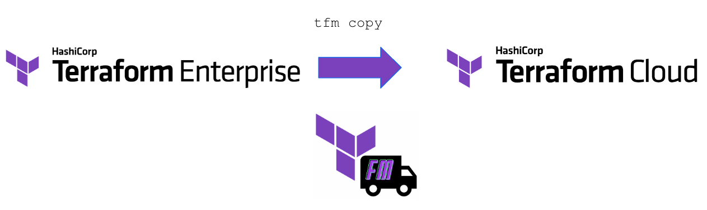
Happy Path Scenario - TFE to TFC
Customer has been running Terraform Enterprise and has decided to move to Terraform Cloud. As part of choosing to buy than build their suite of platform tools and services, they are embarking on using as many tools as a service. Terraform Cloud is one of them.
VCS
They have already migrated or starting using a Version Control System (VCS) in the cloud (eg Github, Gitlab or Azure DevOps).
Teams are in the process of migrating off an on premesis VCS and into a cloud VCS. A goal is for all TFC workspaces to be backed by the new cloud VCS.
Identity Provider (SSO)
For their Identity Provider, they already utilize Azure AD with TFE.
TFE Organization
Customer has only one organization in their TFE. No consolidation of organizations is required when migrating to one TFC organization.
TFE Workspaces
The following is a list of workspaces that have been targeted for initial migrations.
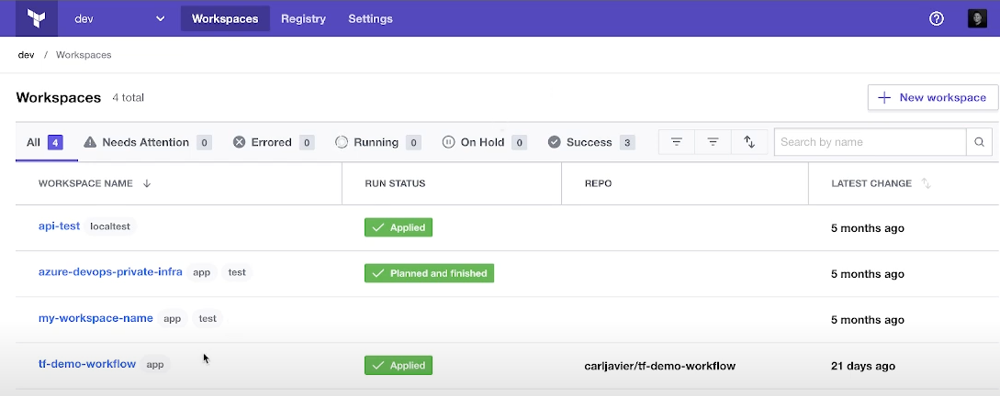
A suitable workspace for migration has the following requirements:
- A clean Terraform Plan with no changes has been ran recently.
- Terraform Version of the workspace is at least 0.13.x above
- Any Workspace variables that are secrets can be regenerated or retrieved to be assigned in the destination workspace.
Preparing the destination (TFC organization)
In preparation of TFC, the following are completed to prepare for migration:
- GitHub connected as a VCS provider
- Agent Pools created and connected to TFC
- Certain workspaces require the use of Cloud Agents
- Variable Sets created in TFC to mimic what was configured in TFE.
- Optional: use
tfm copy varsets - New secrets have been regenerated for certain Variable Sets.
- Azure AD SSO integration setup
- Optional: use
tfm copy teamsif TFC teams will be the same teams from TFE. - Projects created else
tfmwill utilize the "Default Project" if DST_PROJECT_ID is not set during atfm copy workspace. tfm list projectscan be used to determine the project ID.
Discover current TFE details
List Commands
The following commands can assist with initial discovery.
tfm list orgstfm list teamstfm list vcstfm list workspacestfm list projects(If using TFE release greater than v202302-1)
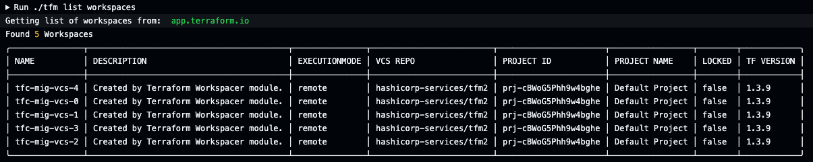
More Discovery Tools
tfm primary focus was on the migration/copy side of the process. If you would like further discovery tools , we recommend using tfx
Setting up the TFM config file
The following is what a ~/.tfm.hcl file will look like for tfm copy workspaces to use.
tfm list * commands could be of use to fill in parts of the tfm.hcl config file.
#List of Workspaces to create/check are migrated across to new TFC
"workspaces" = [
"api-test",
"tf-demo-workflow",
"azure-deveops-private-infra"
]
# A list of source=destination agent pool IDs TFM will look at each workspace in the source
# for the source agent pool ID and assign the matching workspace in the destination the
# destination agent pool ID.
agents-map = [
"apool-DgzkahoomwHsBHcJ=apool-vbrJZKLnPy6aLVxE",
"apool-DgzkahoomwHsBHc3=apool-vbrJZKLnPy6aLVx4",
"apool-DgzkahoomwHsB125=apool-vbrJZKLnPy6adwe3"
]
'
# A list of source=destination Variable Set IDs. TFM will look at each workspace
# in the source for the source variable set ID and assign the matching workspace
# in the destination with the destination variable set ID.
varsets-map = [
"Azure-creds=New-Azure-Creds",
"aws-creds2=New-AWS-Creds",
"SourceVarSet=DestVarSet"
]
# A list of source=destination VCS oauth IDs. TFM will look at each workspace in the source for the source VCS oauth ID and assign the matching workspace in the destination with the destination VCS oauth ID.
vcs-map=[
"ot-5uwu2Kq8mEyLFPzP=ot-coPDFTEr66YZ9X9n",
]
Migrate Teams
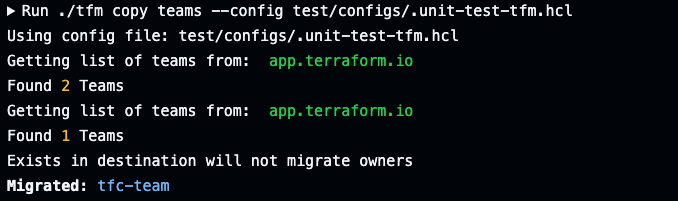Migrate Variable Sets
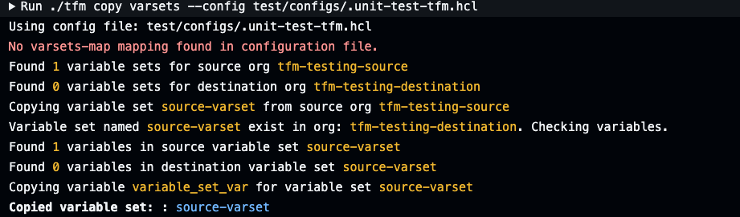Migrate workspaces
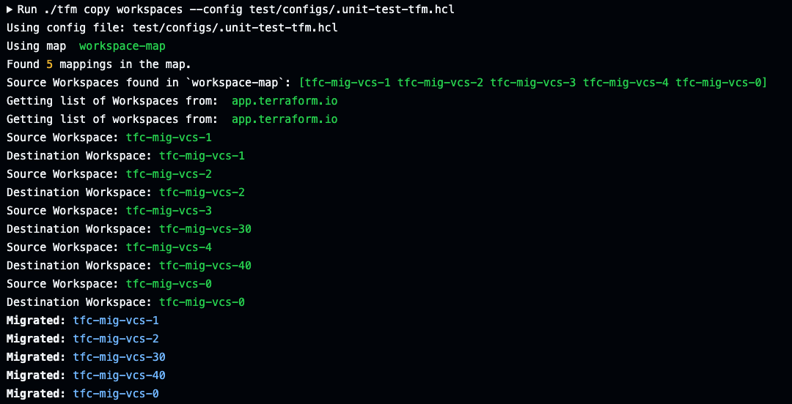
Migrate Workspace state
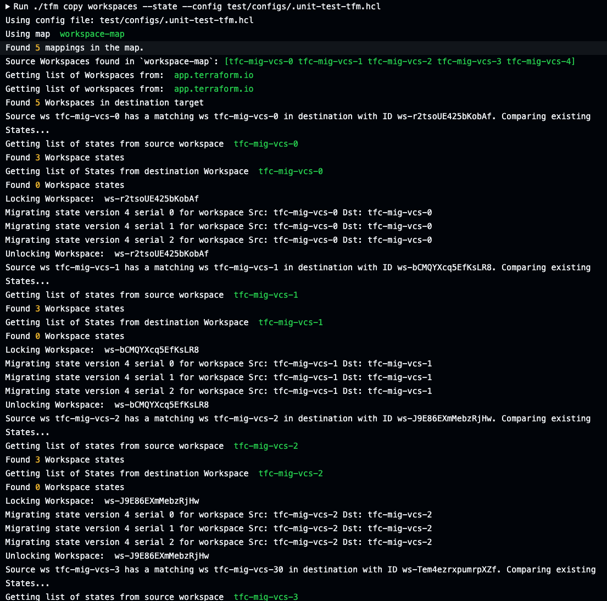
Migrate Workspace Team Access
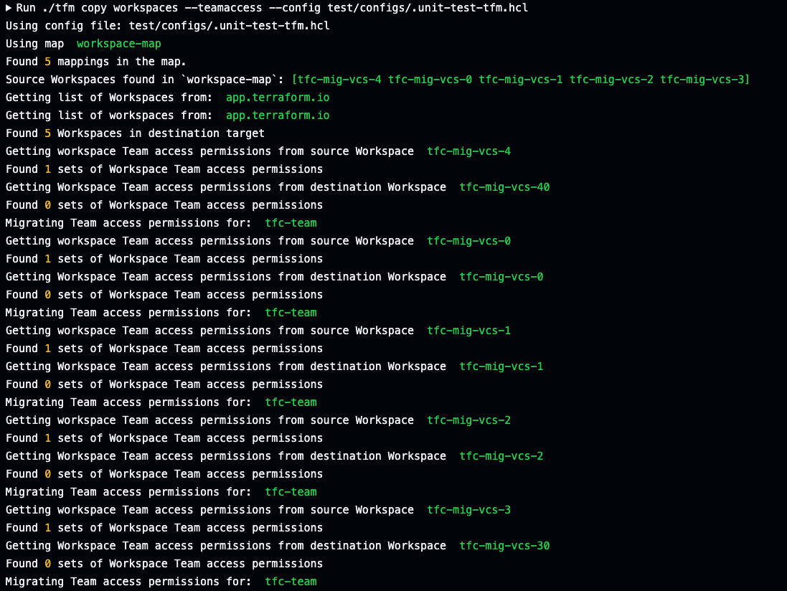Migrate Workspace Variables
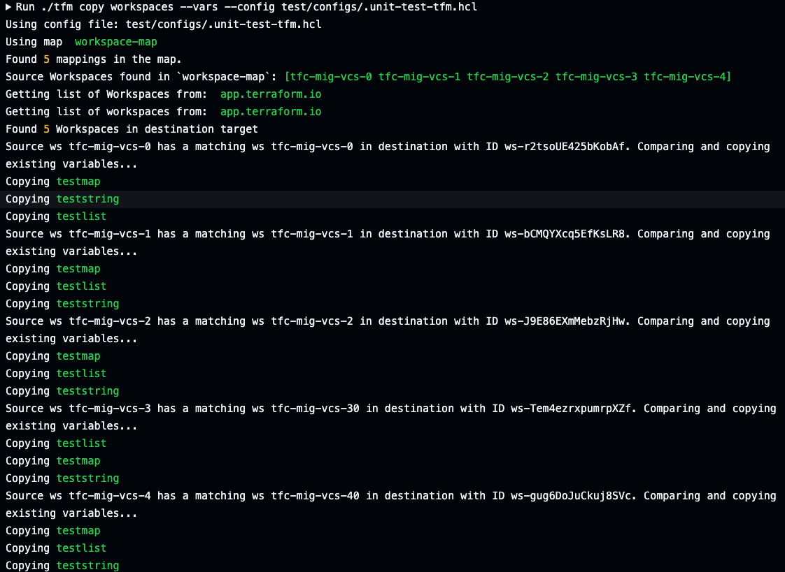
Migrate Workspace VCS settings
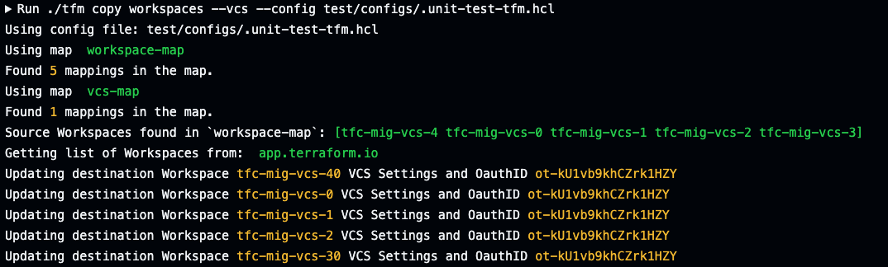
Post tfm Migration Tasks
Basic Verfications
After migration/copy of workspaces and states, it's recommended to verify all is there.
Use the exsting list tools as mentioned in Discovery Section.
Comparing tfm list workspaces using --side [source|destination] flag will verify if all have been migrated across.
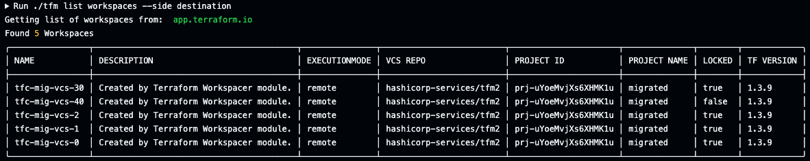
Code Changes
Workspaces that are migrated will require code changes if they utilize the source destination Private Module Registry. Migrating to another TFE/TFC requires the module sources of the original Private Module Registry source to be changed to the destination address.
Lock Workspaces
Destination Workspaces that have been migrated but have not fully cut over should be locked.
Verify Workspaces with clean plans
Each workspace in the destination should be verified a clean plan can be executed.
Example GitHub Actions Pipeline
The following is an example GitHub Actions pipeline that uses the tfm binary. An assumption is made that some customers may want to pipeline the migration as tfm has been developed to be idempotent. You can also view the e2e.workflow file used for nightly testing of TFM for a more robust example.
name: TFM migration pipeline
jobs:
test:
runs-on: ubuntu-latest
env:
SRC_TFE_HOSTNAME: ${{vars.SOURCEHOSTNAME}}
SRC_TFE_ORG: ${{vars.SOURCEORGANIZATION}}
SRC_TFE_TOKEN: ${{secrets.SOURCETOKEN}}
DST_TFC_HOSTNAME: ${{vars.DESTINATIONHOSTNAME}}
DST_TFC_ORG: ${{vars.DESTINATIONORGANIZATION}}
DST_TFC_TOKEN: ${{secrets.DESTINATIONTOKEN}}
RUNNUKE: ${{ github.event.inputs.RunNuke }}
DST_TFC_PROJECT_ID: ${{ vars.DST_PROJECT_ID}}
steps:
- name: Print version
run: ./tfm --version
- name: List organization source
run: ./tfm list organization
- name: List organization destination
run: ./tfm list organization --side destination
- name: List ssh key id source
run: ./tfm list ssh
- name: List ssh key id destination
run: ./tfm list ssh --side destination
- name: List teams source
run: ./tfm list teams
- name: List teams destination
run: ./tfm list teams --side destination
- name: List vcs source
run: ./tfm list vcs
- name: List vcs destination
run: ./tfm list vcs --side destination
- name: List projects destination
run: ./tfm list projects --side destination
- name: Migrate teams
run: ./tfm copy teams --config test/configs/.unit-test-tfm.hcl
- name: List teams destination
run: ./tfm list teams --side destination
- name: Migrate varsets
run: ./tfm copy varsets --config test/configs/.unit-test-tfm.hcl
- name: Migrate Workspaces
run: ./tfm copy workspaces --config test/configs/.unit-test-tfm.hcl
- name: Migrate Workspaces ssh
run: ./tfm copy workspaces --ssh --config test/configs/.unit-test-tfm.hcl
- name: Migrate Workspaces state
run: ./tfm copy workspaces --state --config test/configs/.unit-test-tfm.hcl
- name: Migrate Workspaces teamaccess
run: ./tfm copy workspaces --teamaccess --config test/configs/.unit-test-tfm.hcl
- name: Migrate Workspaces vars
run: ./tfm copy workspaces --vars --config test/configs/.unit-test-tfm.hcl
- name: Migrate Workspaces vcs
run: ./tfm copy workspaces --vcs --config test/configs/.unit-test-tfm.hcl
- name: List projects destination
run: ./tfm list projects --side destination
- name: List workspaces destination
run: ./tfm list workspaces --side destination